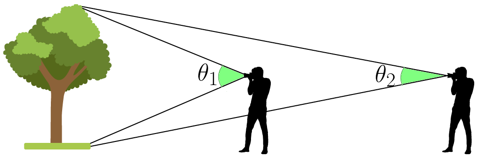
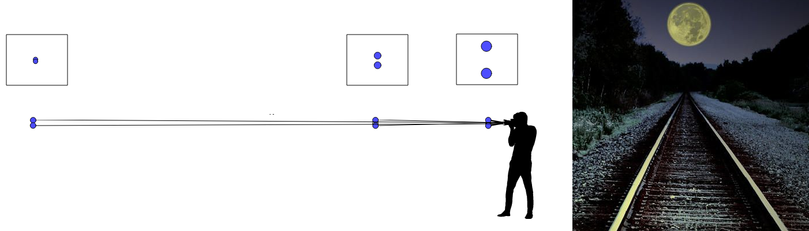
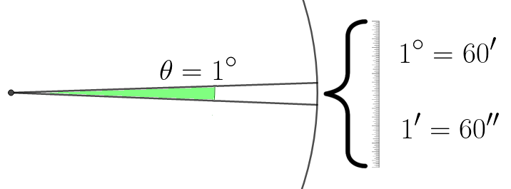
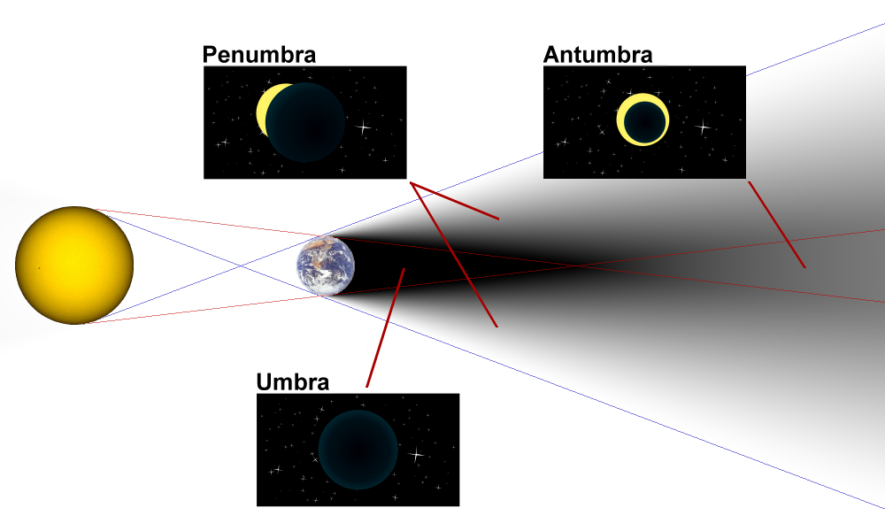
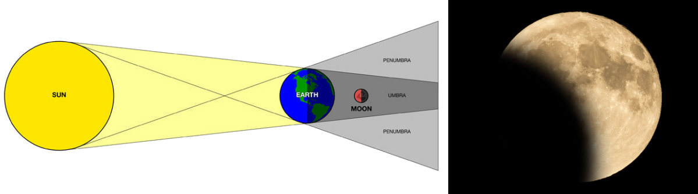
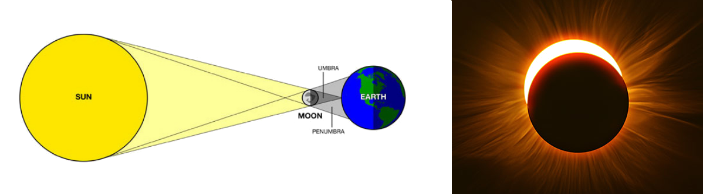
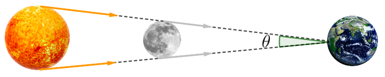
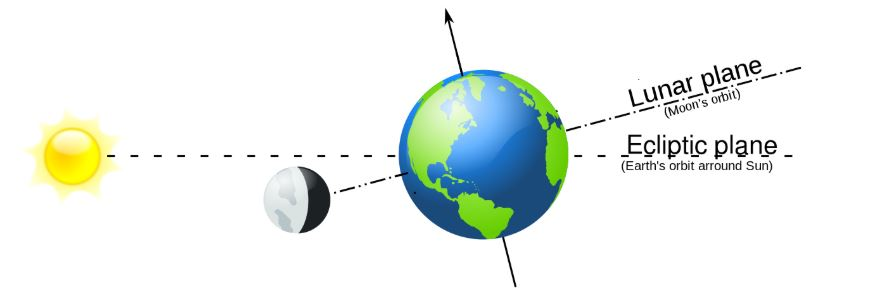
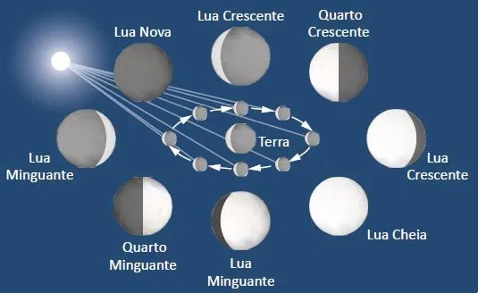

|
O ângulo visual é o ângulo formado entre os dois raios que partem das extremidades de um objeto e chegam aos olhos de um observador. Observe que o ângulo visual de um mesmo objeto varia de acordo com a distância entre o objeto e o observador: quanto maior a distância, menor o ângulo — eles são inversamente proporcionais. |
 |
➔ Limite de acuidade visual
É o menor ângulo visual capaz de proporcionar a distinção entre dois pontos.

Para os seres humanos, esse ângulo é de 1 minuto (1' = (1/60)°)
Para convertermos graus em minutos ou segundos e vice-versa, basta aplicarmos a relação descrita abaixo em regra de três.

|
 |
Um eclipse é um fenômeno astronômico que ocorre sempre que há um alinhamento dos corpos: Sol, Terra e Lua. A luz irradiada pelo Sol incide sobre a Lua e a Terra, gerando regiões de sombra (umbra), penumbra e antumbra; quando os corpos se encontram alinhados, fenômenos visuais podem ser observados. Existem dois tipos de eclipses: |
➔ ECLIPSE LUNAR — Alinhamento Sol – Terra – Lua
Eclipse é um substantivo que denota esconder, apagar, obstruir; portanto, eclipse lunar significa literalmente o apagar da Lua. Nesse fenômeno, a Lua se esconde atrás da Terra e, privada dos habituais raios solares diretos, ganha um aspecto avermelhado bastante incomum. O tom avermelhado se deve a raios solares de baixa frequência que conseguem contornar a atmosfera terrestre e atingir a superfície lunar.

➔ ECLIPSE SOLAR — Alinhamento Sol – Lua – Terra
Eclipse solar significa literalmente o apagar do Sol. Nesse fenômeno, o Sol se esconde atrás da Lua. A Lua, ao se posicionar entre o Sol e a Terra, bloqueia os raios que emanam da estrela, ofuscando-a e fazendo com que, em partes do planeta Terra, se contemple uma imagem impressionante e, talvez para quem desconhece a ciência por trás do fenômeno, assustadora.

Na ocorrência de um eclipse total do Sol, pode-se constatar que o ângulo visual do Sol e da Lua, para um observador posicionado na Terra, é o mesmo.

➔ PLANOS ORBITAIS E CICLO DE SAROS
⚛ PLANO DA ECLÍPTICA (ecliptic plane): é o plano em que está contida a trajetória (órbita) que a Terra percorre ao redor do Sol.
⚛ PLANO DA ÓRBITA LUNAR (lunar plane): é o plano que contém a trajetória (órbita) que a Lua percorre ao redor da Terra.

A imagem acima ilustra as órbitas supramencionadas. Perceba que o plano da órbita lunar encontra-se deslocado (em aproximadamente 5°) em relação ao plano da eclíptica. Esse desalinhamento dos planos orbitais explica a baixa frequência de ocorrência de eclipses. Quando os três corpos se alinham, temos um eclipse. Em decorrência de uma série de fatores, os eclipses se repetem com certa regularidade a cada 223 lunações, o que corresponde a 6 585 dias (aproximadamente 18 anos). A esse período de tempo damos o nome de saros, e ao fenômeno, o nome de ciclo de saros. Um ciclo de saros compreende um total de 84 eclipses, sendo 42 solares e 42 lunares.
